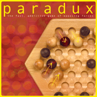
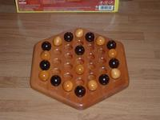

History
Paradux is a game created by Cliff Blood in 2003.
Game Play
The Pieces:
There are two different pieces in Paradux - white and black, with 10 pieces each (20 total) for the standard board.
Rules:
Each player chooses a color and one player goes first. The players alternate making legal moves.
To move: Each player takes turns making one valid move and CANNOT reverse the opponent's move that was just made.
Valid Moves:
Select one of your own pieces and an adjacent piece of the opponent. Move the pair of pieces one space away either horizontally, vertically, or diagonally. Both pieces must have an empty space to move to, or the move cannot be done. A player cannot move a ball with another ball of their own color or move two of the opponent's pieces.
A player may also switch the places of two adjacent pieces.
To win: Be the first player to have four pieces of their own color in a row. The number of pieces needed to win can be changed with different variations of the game.
Variants:
Misere: Line up four (or however many pieces is needed depending on the variant) of the opponent's pieces in a row.
Pictures:
|  |  |
References:
Board Game Geek. Paradux. 5 Feb 2007. <http://www.boardgamegeek.com/game/7981>.